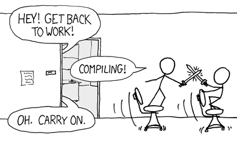

Automation
The must have trend of 2015
These Slides: el-jefe-.github.io/automation/ Created by Jeff Koenig / @JeffKoenig
What is Automation?
Building
Testing

Deploying
Fun
Automatically!!!
Why you need automation?
BECAUSE!!
How to get started?
Testing Frameworks
- MiniTest
- Rspec
- Jasmine
- Cucumber
- JUnit
Start with your core stuff
When you find a bug, write a bug to reproduce it
Culture
ChatOps
THE END
LINKS!!!
- Twitter: @JeffKoenig
- Github: el-jefe-
- These Slides: el-jefe-.github.io/automation/
- Jenkins CI
- Cloudbees for Jenkins hosting
- Travis CI
- Chat bot:Hubot